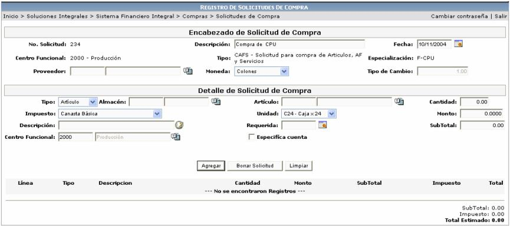
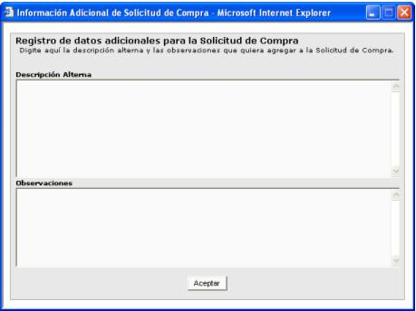
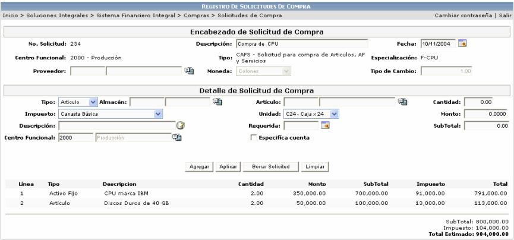
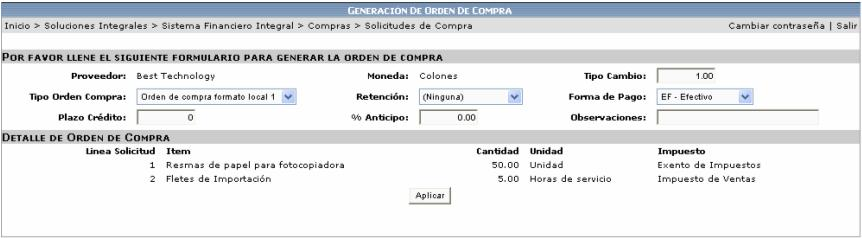
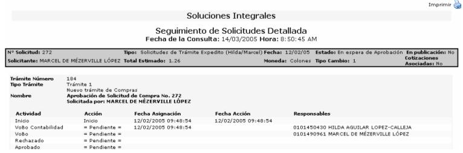

Este proceso permite la inclusión de solicitudes de compra para cualquier artículo, servicio, o activo que la empresa requiera adquirir. Este proceso se realiza de forma individual por cada uno de los solicitantes de la empresa, previo a su aprobación y trámite en el área de proveeduría de la empresa. Es mediante el registro de solicitudes que la totalidad de solicitantes de la empresa le solicita al área de compras el abastecimiento o adquisición de los diferentes bienes o servicios requeridos
La siguiente pantalla muestra la captura del encabezado de una solicitud de compra:
La información solicitada por la aplicación es la siguiente:
No. Solicitud: es un número consecutivo asignado por el sistema.
Descripción: breve detalle que describa la solicitud.
Fecha: fecha de creación de la solicitud.
Centro Funcional: es el centro que esta haciendo la solicitud de compra, este valor definirá la afectación presupuestal asociada a la solicitud, la cadena de mando o aprobaciones requeridas y muy importante también, los bienes o servicios que es posible comprar en la solicitud de compra que se realiza (en caso de existir especialización).
Tipo: se desplegara una lista de los tipos de solicitud asociados al centro funcional escogido; este tipo indicará de acuerdo a la parametrización del sistema las aprobaciones que serán requeridas a fin de autorizar la solicitud que se crea, los bienes o servicios que podrán ser comprados y el formato de impresión deseado para la solicitud.
Al momento de crear una solicitud, el combo Tipo se encuentra vacío debido a que todavía no se ha asociado ningún centro funcional a la solicitud. Hay que recordar que cuando se realizó la configuración de los Tipos de Solicitud en el catálogo, a cada uno de los tipos de solicitud se le asoció los centros funcionales que pueden hacer uso de ese tipo de solicitud. Es por eso que hasta que no se seleccione el centro funcional, el combo Tipo no tendrá información.
Es importante mencionar que los tipos de solicitud varían dependiendo del usuario, esto debido a que el momento de definirse los tipos de compra, se indica para cada usuario los tipos que pueden ser utilizados para las compras deseadas en cada centro funcional.
Especialización: si el tipo de solicitud tiene asociadas especializaciones, se desplegarán las que correspondan. Si el usuario no quiere trabajar con alguna de ellas, puede dejar el valor de “Ninguna” o dejar el campo vacío. Se debe de tener presente que si el usuario escoge una especialización, a la hora de crear el detalle de la solicitud, solamente podrá solicitar artículos, activos o servicios que pertenezcan a esa especialización.
Proveedor: se podrá seleccionar un proveedor solamente en el caso de que la solicitud sea de tipo de Compra Directa; este indicador se define al momento de crear el tipo de solicitud en su parametrización.
Si el tipo de solicitud escogido es del tipo compra directa, es importante mencionar que al momento de autorizarse la solicitud de compra, el sistema generará una orden de compra por los bienes o servicios incluidos en el detalle de la solicitud para el proveedor indicado en el campo “proveedor”; para el caso de tipos de compra que no tienen este indicador definido, el campo proveedor no es requerido.
Moneda: moneda que tendrá la solicitud de compra.
Tipo de Cambio: es dado por el sistema, según el tipo de moneda escogido y corresponde al tipo de cambio del día indicado en la moneda indicada.
Al crear el encabezado se presentará el detalle para ser ingresadas las líneas que tendrá la solicitud de compra:

Los valores o detalles que deben ser incluidos son los siguientes:
Tipo: aquí se desplegarán los tipos de compra (artículo y/o activos y/o servicios) que tiene asociada la solicitud de compra seleccionada.
Si selecciona:
- Artículo: se muestra un campo Almacén para que se asocie, en cual almacén es donde se ingresará el
artículo. Y otro campo Artículo, para seleccionar el artículo a comprar.
- Servicio: se muestra un campo Servicio para seleccionar el servicio a comprar.
- Activo Fijo: se muestra un campo Categoría y otro campo de Clasificación.
IMPORTANTE: no hay que olvidar que los valores de las listas que se desplieguen
en cada uno de estos campos, estarán condicionados a la especialización escogida
en el encabezado.
Cantidad: es la cantidad que se va a comprar.
Impuesto: especificar el impuesto que aplica en esta compra. En caso de que no aplique impuesto, seleccionar EXENTO DE IMPUESTOS.
Unidad: dependiendo de lo que se vaya a solicitar para comprar, se especificará la unidad de medida, que podrá ser, unidades, cajas, horas, litros, galones, docenas, paquetes, metros, etc. o de acuerdo a la parametrización del sistema.
Monto: es el precio unitario de lo que se esta solicitando en la moneda indicada en el encabezado. Es importante mencionar que estos valores corresponden a valores estimados y que serán utilizados por el sistema para realizar la reserva presupuestal al momento de autorizarse la solicitud de compra; los precios finales de la compra serán definidos por el contrato de compra o por los precios finales de la orden de compra en donde se surte la solicitud de materiales.
Descripción: es una breve especificación del producto que se quiere comprar. Si se quiere agregar información adicional o una descripción más detalla de la solicitud, se presiona el icono , y se le desplegará una ventana, para que se ingrese descripciones alternas u observaciones especiales que se desean incluir como parte de la solicitud definida.

Requerida: corresponde a la fecha que se desea tener la mercadería en la empresa, este valor es informativo para el área de compras de la empresa a fin de definir la necesidad real de la mercadería o servicios solicitados.
Subtotal: el sistema calcula este monto de acuerdo a la cantidad y el precio unitario.
Centro Funcional: es el centro funcional donde ingresará la mercadería; este centro funcional se sugiere siempre igual al del encabezado de la solicitud, pero puede ser modificado en caso que se desee afectar presupuestalmente de forma diferente alguna de las líneas de la solicitud de compra.
Especifica Cuenta: el sistema sabe a que cuentas afectar, dependiendo de los datos ingresados en cada línea de compra, pero si el usuario necesita mandar un movimiento a una cuenta específica, se activa el check y aparecerá un campo de cuenta para que se agregue. Estos casos son excepciones a la regla únicamente. Este campo se utiliza cuando se quiere hacer un movimiento contable a otra cuenta que no sea la cuenta definida para esa transacción.

Una vez terminada la solicitud de compra,
se debe de aplicar para pasar al siguiente proceso que es el de la Publicación
de Compra que es llevado a cabo por los compradores. Lo anterior se realiza
presionando el botón de 
La aplicación de una solicitud puede tomar diferentes caminos dependiendo del tipo de solicitud:
1. Solicitud que NO es de Compra Directa: al aplicar una solicitud de este tipo, verifica si tiene trámite o cadena de autorizaciones asociadas, si lo tiene, la realiza hasta que sea aprobado,; una vez autorizada la solicitud el sistema verifica que haya presupuesto, si lo hay crea un número de autorización presupuestaria (NAP), si es probado, se le asigna al comprador que tenga menor carga de trabajo y pasa a la lista que se despliega en el proceso de Publicación de Compra.
Si en el transcurso de la verificación de presupuesto no lo hay se le asigna un número de remachazo presupuestario (NRP), o si el trámite de dicha solicitud es rechazado, esta orden de compra es enviada a la sección de Solicitudes de Compra Rechazadas, donde el usuario podrá estar viendo el detalle de esa solicitud rechazada. Cuando dicha solicitud tiene una Aprobación de OK, el usuario podrá una vez más aplicar la solicitud, para ser asignada a un comprador y seguir con el paso de la publicación.
2. Solicitud que es de Compra Directa: aplica la misma secuencia de pasos de la anterior, solamente que una vez que esta aprobada, pasa a crear de una vez, una orden de compra, no se le asigna a un comprador para que este la publique a sus proveedores. Se muestra la siguiente pantalla a fin de indicar la información adicional requerida por el sistema para crear la orden de compra.

Tipo Orden de Compra: se selecciona el tipo de orden de compra y el formato de impresión deseado para esa orden
Retención: seleccionar el porcentaje de retención, si es que aplica.
Forma de Pago: la forma en que va hacer pagada la orden.
Plazo de Crédito: va a depender de la forma de pago seleccionada.
% Anticipo: porcentaje que se quiere de anticipo del total de la orden, antes de la fecha requerida.
Observaciones: detalle de las consideraciones que debe de tener dicha orden.
3. Solicitud con Contrato y sin Trámite: cuando se realiza una solicitud de compra y una o varias líneas del detalle son artículos o servicios que tienen contrato, cuando se aplica dicha solicitud, el sistema automáticamente genera la orden de compra por esas líneas para el proveedor que tiene asignado esos artículos o servicios en el contrato; la orden de compra que se genera depende de las condiciones del contrato, ya que respecta las características de este último.
4. Solicitud con Contrato y con Trámite: realiza el mismo proceso del caso anterior, solamente con la modificación de que al crearse la orden pasa de una vez a la cadena de trámite para realizar el proceso de aprobación o de rechazo.
Es importante mencionar que el proceso de registro de solicitudes es completamente independiente por usuario, lo que quiere decir que las solicitudes indicadas por cada solicitante pueden ser visualizadas, modificadas y eliminadas únicamente por el solicitante creador de la solicitud.
Otro aspecto relevante a considerar es que cada solicitante puede tener acceso para modificación desde la opción de “registro de solicitudes” solamente las solicitudes de compra que se encuentran pendientes de aplicarse, por lo que no han sido incluidas en el proceso de abastecimiento o surtido de necesidades de la empresa.
Si el usuario desea verificar el estado en que se encuentra una solicitud de materiales, lo puede realizar desde la opción de Consultas y Reportes, en la sección Solicitudes de Compra y escogiendo la consulta Solicitudes de Compra. Ahí se le desplegara una lista con todas las solicitudes de compra, se busca el registro deseado y se hace click encima de él para que el sistema muestre la información que se presenta en la siguiente pantalla:

Los posibles Estados en que se puede encontrar una solicitud de compra son los siguientes:
• Pendiente: se da cuando se está ingresando una solicitud de compra. En el registro de solicitudes de compra únicamente se van a poder mostrar las solicitudes que tenga este estado.
• Rechazada por Presupuesto: en trámite de aprobación de presupuesto pero fue rechazada. Se da cuando se intenta la aprobación de presupuesto, pero es rechazada.
• En Trámite de Aprobación: en espera de aprobación de trámite. En la consulta, Seguimiento de Solicitudes Detallada, se mostrará todo el detalle de la cadena de autorización, donde se mostrará la actividad, el estado de la actividad y los responsables de cada actividad. Igualmente, desde la aprobación de trámites, al consultar el seguimiento del mismo, se mostrará detalladamente la cadena de autorización.

• Aplicada: esta solicitud puede incluirse en un proceso de compra. Si una solicitud tiene este estado es porque pasó aprobación de presupuesto. En el caso de reimpresión de solicitudes solo se imprimen las solicitudes que tengan este estado. Las solicitudes cuyas líneas generan órdenes de compra por Contrato también quedan con este estado.
• Orden de Compra Directa: Solicitud aplicada, pero que genera una orden de compra (Compra Directa). Esta solicitud no puede incluirse en una publicación de compra.
• Parcialmente Surtida: Una solicitud puede tener este estado una vez que se aplica una orden de compra, ya que se dejan líneas sin surtir.
• Surtida: Cuando una Orden de Compra no deja líneas sin atender en la solicitud, la marca como atendida.
• Cancelada: este estado se da cuando se cancela una solicitud de compra.
Si por otra parte lo que desea el usuario es saber quien es la persona encargada de autorizar una solicitud hecha por él, lo puede verificar en la opción de Consultas y Reportes, en la sección Trámites y escogiendo la consulta Mis Trámites Solicitados. Ahí se le desplegara una lista con todas las solicitudes que están pendientes de aprobación, se busca el registro deseado y se hace presiona el botón para ver el detalle del trámite en la siguiente pantalla: